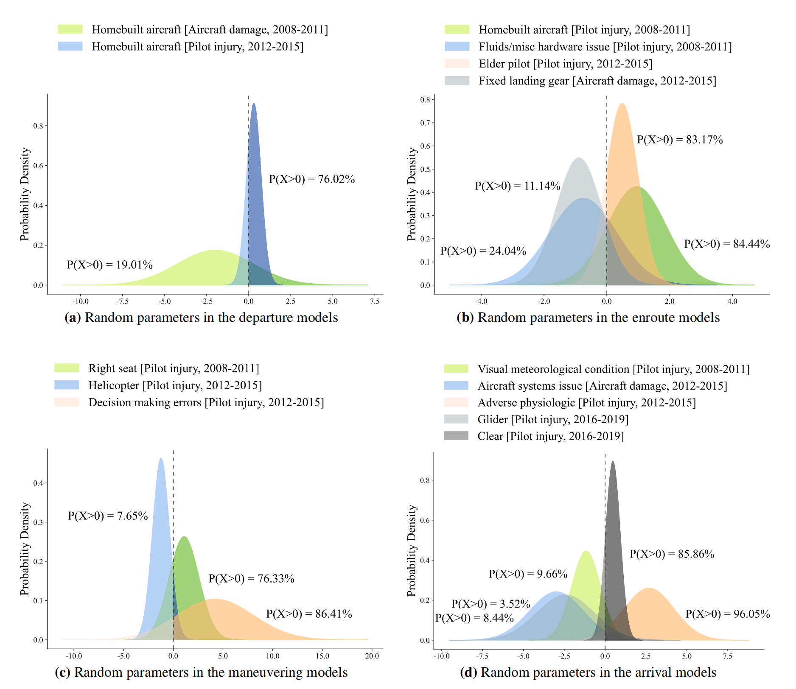

Publications
Profiles: Google Scholar
Journal Articles
-
Exploring the dynamic determinants of general aviation accidents across flight phases and time: A random parameter bivariate probit approach with heterogeneity in means
Qingli Liu, P. Song, F. Li* • Analytic Methods in Accident Research • 2025 • 100386Models accident risk as a dynamic process that varies across flight phases and time, revealing how unobserved heterogeneity shapes accident likelihood rather than assuming fixed effects.

-
Accident investigation via LLMs reasoning: HFACS-guided Chain-of-Thoughts enhance general aviation safety
Qingli Liu, F. Li*, K. K. Ng, J. Han, S. Feng • Expert Systems with Applications • 269:126422 (2025)Structures LLM reasoning using the HFACS hierarchy, turning open-ended text generation into a constrained and domain-aligned accident analysis process.

-
Unveiling the determinants of injury severities across age groups and time: A deep dive into the unobserved heterogeneity among pedestrian crashes
Qingli Liu, F. Li*, K. K. Ng • Analytic Methods in Accident Research • 2024 • 100336Core Idea
Reveals that injury severity is driven by heterogeneous effects across age groups and time, rather than uniform risk factors, highlighting hidden population-level variability.
-
Exploring the driving mechanism and path of BIM for green buildings
Y. Yang, B. Zhao*, Qingli Liu • Journal of Civil Engineering and Management • 2024 • 30(1): 67–84Examines how technological, organizational, and environmental factors jointly drive BIM adoption, framing green building development as a multi-factor interaction process.

-
Construction workers’ representativeness heuristic in decision making: The impact of demographic factors
Qingli Liu, G. Ye*, J. Yang, Q. Xiang, Q. Liu • Journal of Construction Engineering and Management • 2022 • 148(4): 04022005Shows how cognitive biases in decision-making vary across demographic groups, linking heuristic-driven judgment to safety outcomes in construction contexts.

Conference Papers
-
Show the Way: Accelerating General Aviation Accident Investigations through LLMs and HFACS
Qingli Liu, Y. Yan, F. Li*, S. Feng • AHFE 2024, Advances in Human Factors of Transportation, AHFE Open Access, Vol. 148 • 2024
DOI -
Assessment of the Crew On-Duty Status Based on the Dynamic Probabilistic Risk Platform
S. Han, F. Li*, T. Wang, Y. Zhang, Qingli Liu • Proceedings of the AAAI Symposium Series • 1(1):73–79 • 2023
DOI -
Group Dynamics and Air Traffic Controllers’ Safety Behaviors: Self-Efficacy as a Mediator
Qingli Liu, S. Han, F. Li, C. H. Lee • In Leveraging Transdisciplinary Engineering in a Changing and Connected World • IOS Press • 2023
DOI
Under Review / Preprints
-
Next-Generation Accident Investigation: HFACS-CoT-Driven LLMs Advance General Aviation Safety
Qingli Liu, F. Li*, ... • Submitted to Expert Systems with Applications • First-round revision